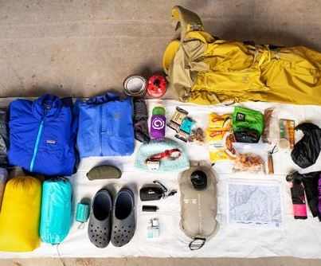

Specifically, a paper map, compass, and/or GPS system. You will use your navigation system to help plan your trip/route, as well as to stay on track during your hike. Be sure to know how to read a topographic map and use a compass before needing to rely on one!
2. Sun Protection
Specifically, sunscreen, sunglasses, and a hat. These items will protect you from harsh UV rays that can lead to sunburn and skin cancer. I always wear a sun hat when hiking (lets make wide brim hats cool again!) and would also recommend wearing long sleeves if you are particularly prone to sunburn.
3. Insulation Layers
Specifically, a jacket, hat/beanie, gloves, rain gear, thermal underwear/base layers. These will depend on the type of weather and season you are hiking in, but always be prepared for sudden changes in conditions. The NPS recommends you pack an extra layer of clothing that reflects the most extreme conditions you could encounter.
4. Illumination
Specifically, a headlamp, lantern, or flashlight. You will need some sort of light source for night hiking, around camp, and in case you get lost. Be sure to pack extra batteries if your device is battery-operated.
5. First Aid Supplies
Specifically, a lightweight backpacking-friendly first aid kit. Be prepared for emergencies and also have a mini first aid kit with you on all hikes and backpacking trips. I personally bought a pre-made kit and then added a few extra items that were specific to my needs and the type of trip.

6. Fire Starters
Specifically, matches, a lighter, and/or fire starters. This is in regards to emergency settings where you may need to use fire as a signal, to keep warm, or to cook food. Otherwise, I recommend using a camp stove and avoiding open fires (always make sure to adhere to burn bans).
7. Repair kit and tools
Specifically, duct tape, a knife, scissors, and/or a multi-tool. Having some basic repair items will help if a gear item breaks or in other emergency situations. Bring any tools/repair items specific to your trip.
8. Shelter
Specifically, a tent, space blanket, tarp, or bivy. Adequate shelter will help protect you from severe weather conditions and exposure during an emergency survival situation.
9. Food
Specifically, meals and snacks for in between. Make sure you have enough food for your trip length, plus a little extra (e.g. a days extra supply). Think about the calorie density to weight ratio and also avoid heavy food items that will weigh down your pack.
10. Hydration
Specifically, water and a water filtration method. Remember to drink water often and before you feel thirsty. I also recommend using electrolytes when sweating. Water filtration is another consideration as it is best to avoid drinking unfiltered water.
Backpacking can be incredibly empowering and fulfilling. There is just something so amazing about being able to get yourself from point A to point B with everything you need to survive.
For many women, realising that they can complete the physical and mental challenges of backpacking can be life-changing. I have personally gained so much from backpacking trips and I want to share the things I have learned along the way.
I hope you enjoy these must-know backpacking tips!
Must-Know Backpacking Tips for This Summer
One of the best things about backpacking is that it allows you to visit beautiful places that are not accessible to vehicles. You can be out in the wilderness completely surrounded by nature and switched off from everyday distractions. Women backpackers can face different challenges compared to male backpackers, and many women tell me that they are too scared to try it out. I am here to help you get started by sharing backpacking tips specifically for women. Find out everything female backpackers need to know to have amazing outdoor adventures!
How to Plan a Backpacking Trip
If you are a complete beginner I would definitely suggest finding someone else to go with. Maybe a friend who has done it before or you could meet up with someone likeminded who is also wanting to try it out. There are tons of Facebook groups/pages for finding other outdoorsy women.
Choosing a backpacking destination is Another major thing to consider is where you will go backpacking. I know a lot of women are concerned about safety when backpacking and do not want to be completely alone in the wilderness. These are my top tips for choosing somewhere to go backpacking, especially your first time.
Choose a relatively popular trail that is well marked, regularly maintained, and easy to follow. For example, national park trails and backpacking destinations closer to a city.
Do not go too deep into the backcountry for your first time and also choose a camping destination under 5 miles from the trailhead. Though keep in mind that you are safer when camping more than 1 mile away from a road or trailhead, so choose a sweet spot somewhere in between those.
If it is a more quiet / lesser visited trail then you could consider going on a Friday or Saturday night, where the chances of others being around is higher.
You could choose a destination that has phone service for some extra peace-of-mind.
Female Backpacking Safety Tips
It seems that the two things that scare women the most when thinking about backpacking are wildlife and men. And when I say wildlife, I am mostly referring to bears.
I first want to say that the likelihood of something bad happening to you in the wilderness in relation to men and wildlife is very low, especially if you take adequate precautions. As a woman, you are statistically more safe in the backcountry compared to walking around a city after dark. But it is important that you are prepared, lets talk about how to do that.
How to Stay Safe When Backpacking as a Woman
Hike with other people when possible. You can also bring your dog along if they are a good fit for backpacking.
Pack adequate gear (including the 10 essentials) and know how to use it. Research trail conditions + weather and factor that in when preparing for your adventure.
Carry an emergency / GPS device
Consider carrying runners mace or bear spray. Some women also like to carry a knife for multi-purpose uses and also as a back-up weapon. Research wildlife in the area you are backpacking and follow bear precautions if necessary. Read my guide on bear safety for backpackers and hikers.
Avoid camping on or near a game trail. You do not want animals or hunters running into you.
Always tell someone you trust exactly where you are going and when you will be back.
Be careful who you talk to about your plans once you are out on the trail. Consider keeping your camping destination to yourself and do not point out the fact that you will be alone. Avoid answering or even lie if you feel uncomfortable.
Do not hesitate to use your safety whistle if the need arises, 3 blasts is the universal call for help.
And probably the most important thing to consider when backpacking as a woman, trust your gut! If you feel uneasy about someone be sure to distance yourself, keep information private, and potentially consider hiking back to your car. Confide in other female hikers if you feel unsafe. There is absolutely no shame in turning around if you feel unsafe or unprepared.
Got Everything You Need?
It is important to have everything you need before you hit the trail. You will find an entire backpacking checklist in the next section of this guide, but the most important things to remember are the 10 essentials.